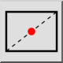
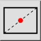
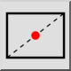
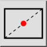

M 中央（２点指定）
ツールバー/アイコン:
 

メニュー: S スナップ > M 中央（２点指定）
ショートカット: S, N
コマンド: snapintersectionmiddlemanual | sn
ツールバー/アイコン:
 

メニュー: S スナップ > M 中央（２点指定）
ショートカット: S, N
コマンド: snapintersectionmiddlemanual | sn
このツールは、2ポイント間の中間にあるポイントにスナップすることを可能にします。
これは対角線上に選択することにより長方形か多角形の中心にスナップするために最も一般に使用されます。